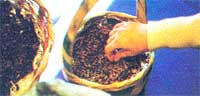
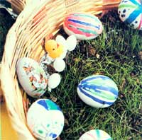

This year, why not try a new twist on an old holiday ritual.
With a little help from you, your children can undertake an enjoyable task and learn a bit about the natural world at the same time ... by planting real grass seed in this year's Easter baskets! The project is inexpensive, simple to accomplish ... and just plain fun!
In order to prepare their "living baskets", the youngsters will merely have to line standard woven containers with any one of the following materials: foil, plastic wrap, sphagnum moss, or burlap. Then let them fill each basket with fine-grained garden (or potting) soil ... sprinkle the earth with an even covering of grass seed ... and moisten it daily with a mist spray.
When the seeds have sprouted, set the baskets in a sunny location (on a windowsill if frosts are common in your area at this time of year), and be sure the children continue to mist the turf regularly. Soon an authentic green "carpet" of grass will form a lush nest for brightly colored Easter eggs. And after the spring holiday, the little circles of sod can be transplanted outdoors. Just find a bare spot in your yard and lay the covering to rest.
In the course of preparing these Easter baskets, your youngsters will be picking up knowledge about the way things grow. You can bet that the lesson will stay with them, too. After all, how can you beat "lawning by doing"!
|
 Your youngsters will have fun planting grass seed in foil-lined baskets |
 The resulting lush carpet makes a pefect nest for decorative Easter eggs |
|